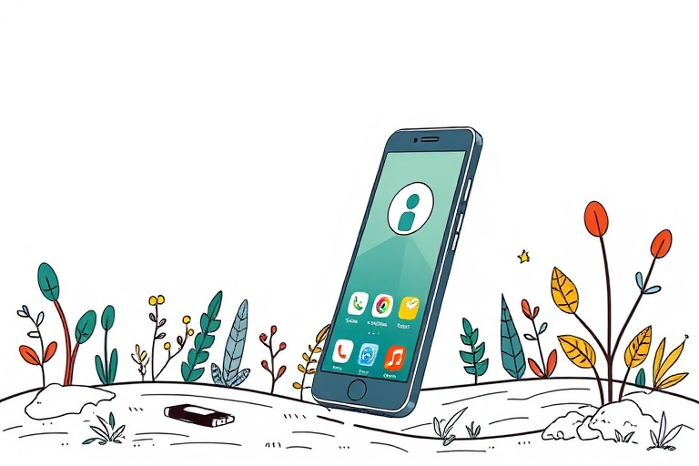

অ্যান্ড্রয়েড ফোনের গোপনীয়তা ও সুরক্ষার জরুরি টিপস: সহজ উপায়ে ব্যক্তিগত ডেটা বাঁচান
Category: mobile | Language: bn
আজকাল আমাদের জীবনের প্রায় সব গুরুত্বপূর্ণ কাজই অ্যান্ড্রয়েড ফোনের মাধ্যমে সম্পন্ন হয়। ব্যাংকিং লেনদেন, ইউপিআই (UPI) পেমেন্ট, ব্যক্তিগত ছবি আদান-প্রদান থেকে শুরু করে অফিসের গোপন নথিপত্র—সবই এখন মোবাইলে সংরক্ষিত থাকে। কিন্তু অধিকাংশ ব্যবহারকারী ফোন কেনার পর ডিফল্ট সেটিংস পরিবর্তন করেন না, যার ফলে বিভিন্ন অজানা অ্যাপ অজান্তেই ব্যক্তিগত তথ্য হাতিয়ে নিতে পারে। এই নিবন্ধটি মূলত ভারতের সাধারণ অ্যান্ড্রয়েড ব্যবহারকারীদের জন্য লেখা, যাতে জটিল প্রযুক্তিগত ভাষা ছাড়াই খুব সহজে নিজের ফোনের সুরক্ষা ও গোপনীয়তা বজায় রাখা যায়।
ফোনের গোপনীয়তা রক্ষার প্রথম এবং প্রধান ধাপ হলো অ্যাপ পারমিশন (App Permissions) বা অ্যাপের অনুমতি নিয়ন্ত্রণ করা। যখনই আমরা কোনো নতুন অ্যাপ ইনস্টল করি, সেটি ক্যামেরা, মাইক্রোফোন, কন্ট্যাক্টস বা লোকেশনের অনুমতি চেয়ে বসে। উদাহরণস্বরূপ, একটি সাধারণ ক্যালকুলেটর বা ফ্ল্যাশলাইট অ্যাপের কখনো আপনার ফোনবুক বা লোকেশন জানার প্রয়োজন নেই। যদি এমন কোনো অদরকারি পারমিশন দেওয়া থাকে, তবে অ্যাপ প্রস্তুতকারী সংস্থা আপনার গতিবিধির ওপর নজর রাখতে পারে। তাই অপ্রয়োজনীয় অনুমতি বন্ধ করা অত্যন্ত জরুরি। বিভিন্ন ব্র্যান্ডের ফোনে (যেমন স্যামসাং, শাওমি বা রিয়েলমি) অপশনগুলির নাম সামান্য আলাদা হতে পারে, তবে মূল কাজটি একই।
আপনার ফোনের লোকেশন সেটিংস সুরক্ষিত রাখা আরেকটি গুরুত্বপূর্ণ পদক্ষেপ। অ্যান্ড্রয়েড সিস্টেমে দুটি ধরণের লোকেশন সুবিধা থাকে—'প্রিসাইজ লোকেশন' (সঠিক অবস্থান) এবং 'অ্যাপ্রক্সিমেট লোকেশন' (আনুমানিক অবস্থান)। গুগল ম্যাপ বা রাইড শেয়ারিং অ্যাপ ছাড়া অন্য কোনো সাধারণ অ্যাপকে সঠিক অবস্থান দেওয়ার প্রয়োজন নেই। এটি নিয়ন্ত্রণ করতে ফোনের Settings-এ যান, তারপর Apps বা Privacy অপশন বেছে নিন। এরপর Permission Manager-এ গিয়ে Location নির্বাচন করুন। সেখানে অপ্রয়োজনীয় অ্যাপের অনুমতি 'Don't allow' করে দিন এবং প্রয়োজনীয় অ্যাপের ক্ষেত্রে 'Allow only while using the app' নির্বাচন করুন।
অ্যান্ড্রয়েড ১২ এবং তার পরবর্তী সংস্করণগুলিতে গোপনীয়তা আরও শক্তিশালী করা হয়েছে। লক্ষ্য করবেন, যখনই কোনো অ্যাপ ক্যামেরা বা মাইক্রোফোন ব্যবহার করে, তখন স্ক্রিনের ওপরের ডান কোণে একটি ছোট সবুজ ডট (Green Dot) জ্বলে ওঠে। আপনি যদি কোনো অ্যাপ ব্যবহার না করা অবস্থাতেও এই সবুজ আলোটি দেখতে পান, তবে বুঝবেন ব্যাকগ্রাউন্ডে কোনো অ্যাপ গোপনে আপনার অডিও বা ভিডিও রেকর্ড করছে। এছাড়া আপনার ফোনের Settings থেকে 'Privacy Dashboard' অপশনে গিয়ে দেখতে পারেন গত ২৪ ঘণ্টায় কোন অ্যাপ কতবার ক্যামেরা, মাইক্রোফোন বা লোকেশন অ্যাক্সেস করেছে। এটি ব্যবহারকারীদের রিয়েল-টাইমে নজরদারি ধরতে সাহায্য করে।
ভারতে ইদানীংকালে হোয়াটসঅ্যাপ বা টেলিগ্রামের মাধ্যমে ভুয়ো বিদ্যুৎ বিল বা লটারি জেতার লোভ দেখিয়ে ক্ষতিকারক এপিকে (APK) ফাইল পাঠানো হচ্ছে। গুগল প্লে স্টোরের বাইরে থেকে এমন কোনো অজানা ফাইলের লিঙ্কে ক্লিক করে অ্যাপ ইনস্টল করবেন না। ফোনে সবসময় 'Google Play Protect' চালু রাখুন। এটি পরীক্ষা করতে Play Store খুলুন, ডানদিকের প্রোফাইল ছবিতে ট্যাপ করে 'Play Protect' অপশনে যান এবং 'Scan' বোতামে চাপ দিন। এই ফিচারটি আপনার ফোনে থাকা যেকোনো ক্ষতিকারক ম্যালওয়্যার বা স্পাইওয়্যার স্বয়ংক্রিয়ভাবে চিহ্নিত করে তা নিষ্ক্রিয় করতে সহায়তা করে।
লক স্ক্রিনের নোটিফিকেশন থেকেও অনেক সময় গোপন তথ্য ফাঁস হয়ে যায়। ফোন লক থাকা অবস্থায় যদি ব্যাঙ্কের ওটিপি (OTP) বা ব্যক্তিগত মেসেজ স্ক্রিনে ভেসে ওঠে, তবে যে কেউ আপনার ফোন স্পর্শ না করেই তা দেখে নিতে পারে। এই সমস্যা এড়াতে Settings-এ গিয়ে Notifications বা Lock Screen অপশনে যান। সেখানে 'Hide sensitive content' বা 'Don't show sensitive notifications' বিকল্পটি চালু করুন। এর ফলে ফোন আনলক না করা পর্যন্ত ওটিপি বা মেসেজের ভেতরের লেখা স্ক্রিনে দেখা যাবে না, কেবল অ্যাপের আইকনটি প্রদর্শিত হবে।
গুগল স্বয়ংক্রিয়ভাবে আপনার ব্যবহারের ওপর ভিত্তি করে বিজ্ঞাপন দেখানোর জন্য একটি বিজ্ঞাপনী পরিচয়পত্র বা 'Advertising ID' তৈরি করে। এই ট্র্যাকিং বন্ধ করতে চাইলে Settings-এ যান, এরপর Google অপশন থেকে Ads নির্বাচন করুন। সেখানে 'Delete advertising ID' বিকল্পে ট্যাপ করে এটি মুছে ফেলুন। এর ফলে সংস্থাগুলি বিভিন্ন অ্যাপ জুড়ে আপনার পছন্দের উপর নজর রেখে লক্ষ্যভিত্তিক বিজ্ঞাপন পাঠাতে পারবে না। একইসঙ্গে গুগলের 'Data & Privacy' ট্যাবে গিয়ে 'Web & App Activity' এবং 'Location History'-র জন্য 'Auto-delete' চালু করে রাখতে পারেন, যাতে পুরনো ডেটা নির্দিষ্ট সময় পর নিজে থেকেই মুছে যায়।
স্মার্টফোনের নিরাপত্তার সবচেয়ে বড় সীমাবদ্ধতা হলো মানুষের অসাবধানতা। আপনি যদি নিজেই কোনো প্রতারণামূলক ওয়েবসাইটে গিয়ে পাসওয়ার্ড লিখে দেন বা ফোনে আসা ওটিপি অচেনা কাউকে বলে দেন, তবে ফোনের কোনো সিকিউরিটি ফিচারই আপনাকে বাঁচাতে পারবে না। এছাড়া অনেকে দীর্ঘ সময় ধরে ফোনের সফটওয়্যার বা সিকিউরিটি প্যাচ আপডেট করেন না, যা পুরোনো নিরাপত্তা ত্রুটিগুলোকে উন্মুক্ত রাখে। ফোনের Settings > System Update-এ গিয়ে সবসময় নিয়মিত আপডেট ইনস্টল করা উচিত।
আপনার ডিজিটাল জীবন সুরক্ষিত রাখার প্রক্রিয়াটি খুব একটা কঠিন বা সময়সাপেক্ষ নয়। আজই মাত্র পাঁচ মিনিট সময় বের করে আপনার ফোনের সেটিংস খুলুন, এমন কোনো অ্যাপ যদি দেখেন যা গত কয়েক মাস ধরে ব্যবহার করেননি, তবে সেটি অবিলম্বে আনইনস্টল করে দিন। একই সাথে নোটিফিকেশন ও লোকেশন পারমিশনগুলো একবার যাচাই করে নিন। এই ছোট পদক্ষেপগুলোই অনলাইন প্রতারণা এবং তথ্য চুরির হাত থেকে আপনার অ্যান্ড্রয়েড ফোনকে অনেকটাই নিরাপদ রাখবে।